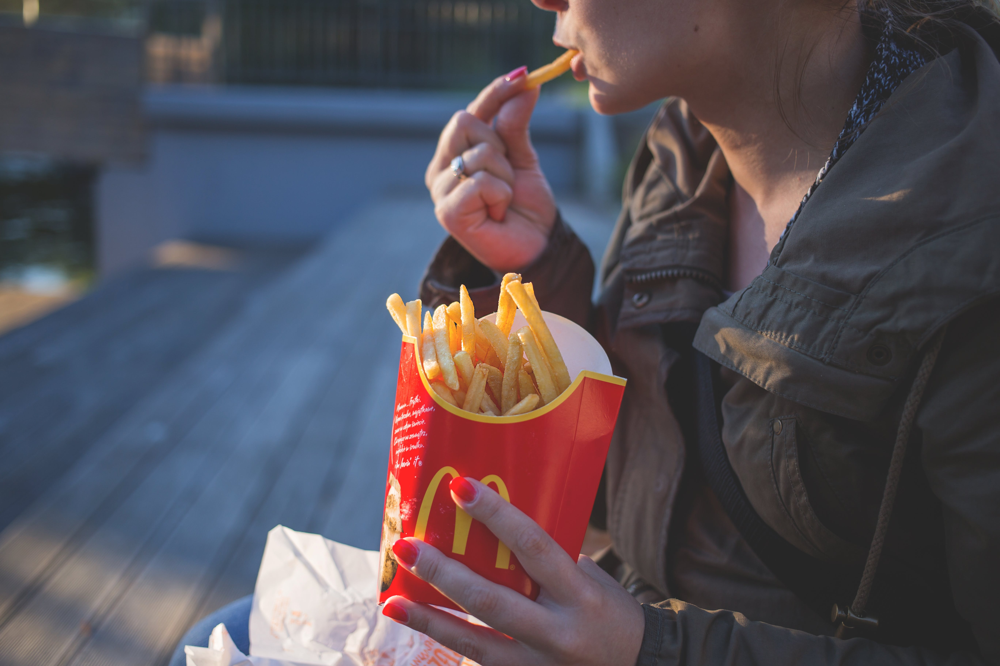
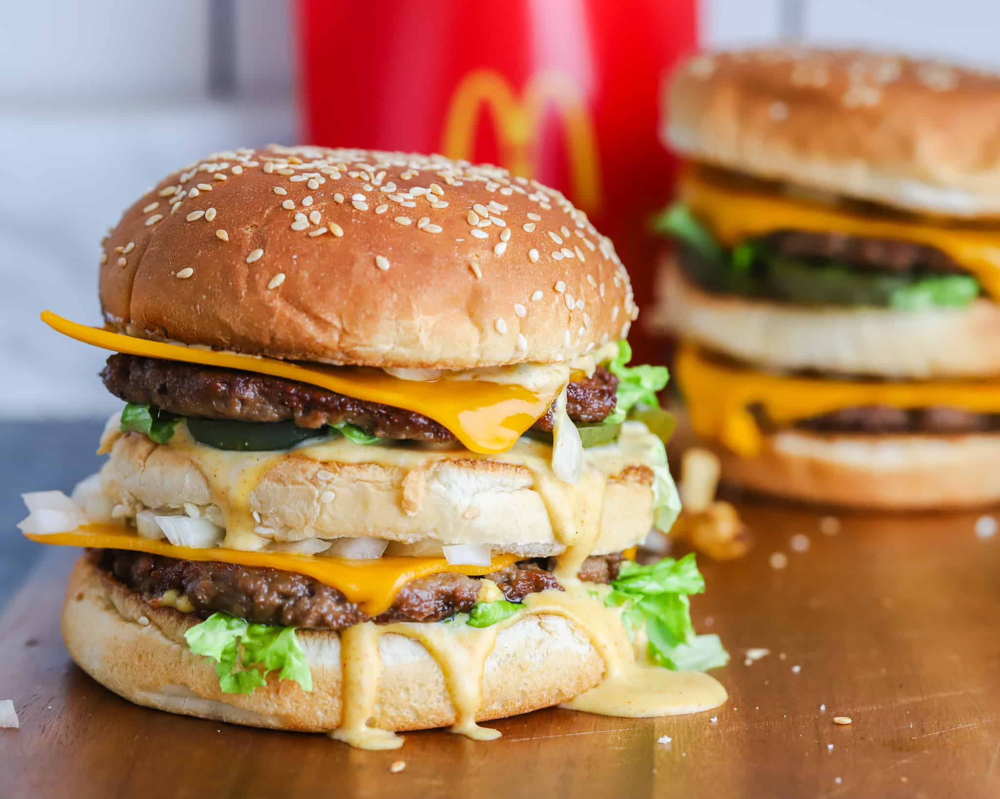
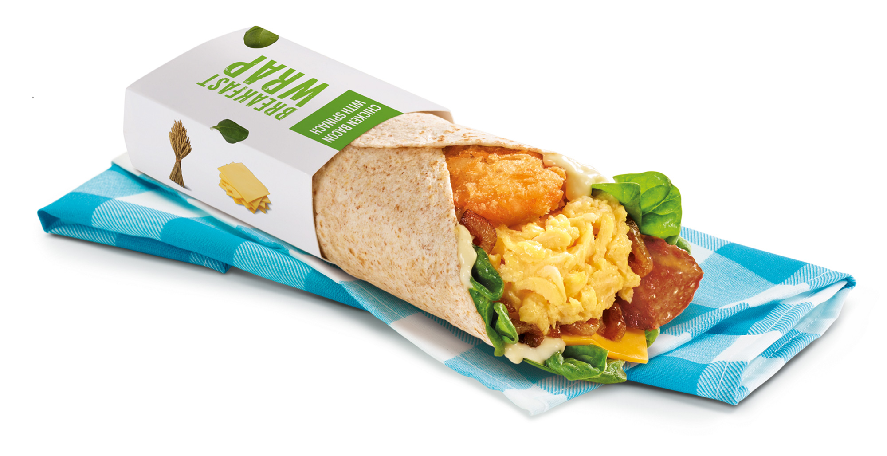

The Story of McDonalds
🍔 Greetings, fellow data explorer! Join us on an exhilarating expedition into the captivating universe of McDonald’s. Get ready for an insightful journey as we delve deep into the world of the Golden Arches!
Here, we present a global map showcasing all McDonald’s locations as of 2022:
🌍 Where to eat McDonald’s: All Around the World (As of 2022)
🔥 McDonald’s Density Hot Spots
With the ‘McDonald’s Outlets per Million Residents’ toggle activated, a clear trend emerges – the density of McDonald’s locations is notably high in the US, Canada, Europe, and Australia. This concentration indicates a strong presence in these regions relative to their populations. However, the story takes an interesting turn when we examine countries with the least dense McDonald’s to Population ratio, such as Peru, Egypt, and India.
💰 The Golden Arches and GDP
When toggling on ‘GDP per Capita’, you may notice that there is barely any changes in colour, save a few countries like China and some regions in Europe etc. The graph shows that there is a positive correlation between GDP per capita and the number of McDonald’s outlets in a country. This is consistent with the findings from the first graph, which showed that wealthier countries tend to have more McDonald’s outlets per million residents.
This correlation can be explained by a number of factors, including:
Wealthier countries tend to have more urbanization and higher levels of disposable income. This creates a larger market for fast food restaurants like McDonald’s.
Wealthier countries also tend to have more foreign direct investment. McDonald’s is one of the world’s largest foreign direct investors, and it has a long history of expanding into new markets.
Some people argue that McDonald’s is a symbol of Western culture and globalization. Wealthier countries are more likely to be exposed to Western culture and globalization, and this may lead to a greater demand for McDonald’s restaurants.
🌍 Exploring Disparities
The countries with lower McDonald’s density often share common characteristics. Many are classified as developing nations, where disposable income is limited, and supply chains pose considerable challenges. Additionally, some countries attribute their low McDonald’s density to political reasons, a small local population, or simply a lack of affinity for American fast-food burgers.
🐘 Africa: A Unique Landscape
Zooming in on Africa, a continent seemingly devoid of McDonald’s presence, we uncover a myriad of factors influencing this phenomenon.
| Factors | Implications |
|---|---|
| 📉 Economic Challenges | Africa’s diverse economic landscape poses challenges like poverty, political instability, and underdeveloped infrastructure. These hurdles can hinder McDonald’s efforts to establish profitable operations in certain regions. |
| 🍲 Cultural Diversity | Africa’s rich culinary heritage presents a complex challenge. While McDonald’s adapts menus to local tastes, achieving a balance between global consistency and diverse local preferences becomes intricate in a continent with such culinary variety. |
| 🚚 Supply Chain Struggles | McDonald’s stringent quality standards rely on efficient supply chains. Inadequate infrastructure, including transportation and logistics, in Africa can impede the reliable supply of ingredients, affecting the company’s quality standards. |
| 🍔 Fierce Competition | The fast-food industry in Africa is fiercely competitive, with local and international chains vying for market share. Entering this market demands careful research and an effective competitive strategy. |
| 📋 Regulatory Complexities | Different African countries have varying regulations for foreign businesses. Navigating these diverse regulatory frameworks can be time-consuming and financially burdensome for McDonald’s. |
🌍 Where Should I go to Find McDonalds?
If you're wondering where to find a McDonald's, the answer is almost anywhere! With over 38,000 locations worldwide, McDonald's has a presence in more than 100 countries across the globe. Whether you're in a bustling city, a quiet suburb, or even on a road trip in the countryside, chances are there's a McDonald's nearby. Especially so in Europe, America and Asia, satisfying your craving for a Big Mac or a McFlurry is just a short trip away. Happy dining! 🍔
📈 When to eat McDonald’s: The Big Mac Price

The Big Mac Index, invented by The Economist in 1986, is a lighthearted guide to whether currencies are at their “correct” level. It’s based on the theory of purchasing-power parity (PPP), the notion that in the long run exchange rates should move towards the rate that would equalize the prices of an identical basket of goods and services (in this case, a burger) in any two countries.
This interactive chart highlights key moments in history, with notable increases coinciding with McDonald’s “I’m Lovin’ It” campaign in 2003 and a downturn following the release of the “Super Size Me” documentary in 2004. The Global Financial Crisis of 2007-2009 also significantly impacted the Big Mac Index. Surprisingly, the COVID-19 lockdowns in 2020 had a relatively modest effect, possibly due to widespread delivery options and the relative affordability of McDonald’s compared to other food choices.
🍔 When Should I Order?
So, when’s the best time to indulge in a Big Mac? Well, if you’re an economist, you might say during a financial upswing. But if you’re a foodie, the answer is always “right now”. And the worst time? Probably when you’re on a diet. But hey, who are we to judge? Enjoy your meal! 🍔
📊 What you should eat at McDonald’s : Nutritional Information

A Correlation Plot
The correlation plot in provides a visual representation of the relationship between different nutritional components in McDonald’s food.
The chart uses colour-coding to display correlations, with red indicating strong negative correlations and yellow representing strong positive correlations. You can hover over squares to view exact correlation coefficients and customize the chart by selecting specific variables of interest.
For example, a strong positive correlation between calories and fat suggests that higher-calorie items tend to be richer in fat. This information empowers you to make informed dietary choices at McDonald’s based on your preferences and needs. Notably, the darkest red squares on the plot represent sugar and salt, aligning with the expectation that salty items are typically not sweet, and vice versa.
🍔 A Closer Look at the Nutritional Values
This chart allows you to explore the nutritional content of various items on the McDonald’s menu. You can select different variables for the X and Y axes, and even color the data points based on a third variable. Additionally, you can filter the data by tags to focus on specific categories of menu items.
The chart provides a wealth of information about the nutritional content of McDonald’s food. For instance, you can compare the calorie content of different items, or examine the relationship between fat content and sodium levels. The chart also allows you to explore how these nutritional variables vary across different categories of food, such as burgers, salads, or breakfast items.
🍟 So, What Should I Order?
As for what to order, it depends on your dietary preferences and nutritional needs! If you’re watching your calorie intake, you might want to opt for items with lower calorie counts. On the other hand, if you’re looking for a protein-packed meal, you can use the chart to identify items with high protein content. Remember, balance is key when it comes to nutrition, so don’t forget to enjoy a variety of foods from the menu!